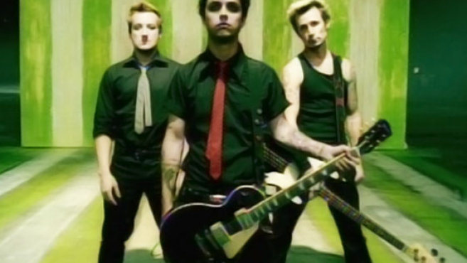

HOW WE GOT THERE FROM HERE BY ANNA MARIE ARMSTRONG

The distance between Rodeo and Santa Cruz is just over 90 miles. For the most part the drive is unremarkable – urban, industrial cities and rural, unincorporated towns along the Eastshore Freeway, shaping the wasteland East of the San Francisco Bay. But then the interstate gives way to Highway 17 and you begin the ascent to another world. The road is a thin .
Read More
BILLBOARD MAGAZINE FEATURES TRIBECA FILM FESTIVAL

The distance between Rodeo and Santa Cruz is just over 90 miles. For the most part the drive is unremarkable – urban, industrial cities and rural, unincorporated towns along the Eastshore Freeway, shaping the wasteland East of the San Francisco Bay. But then the interstate gives way to Highway 17 and you begin the ascent to another world. The road is a thin.
Read More
About Me
My name is Beth, Elizabeth Evelyn to be exact. A native Tennessean, I was born in the South. I didn’t care for being Southern, but I grew up. And when you grow up you get eyes in your head. And what I saw was myself in the South and the South in me. It’s a broken place, and its richness lies in its brokenness. It’s an awfully human place. A bloody place. A pig fat place. One morning you wake up, look in the mirror, and see that the river and mountains and murder ballads are in you. They are you. You’re them. And you know its nonsense to say otherwise. I am, for better or worse, some strange breed of Southern.
I went further south after high school—swamps & Spanish moss south—studying philosophy & writing in the low country at Loyola University New Orleans where I had religious experiences in the form of oysters on the half shell swimming in Tabasco, brown paper bags of crawfish, muffulettas from Central Grocery, and midnight beignets at Café du Monde. In the summers I backpacked in Europe on a shoe string and spent most of my time in a small village in the Netherlands eating homemade bread and stroop waffles at a place called L’abri, which translates as “shelter” from French. It was there, spending afternoons in the kitchen helping to prepare the communal meals we ate around a large table, meals punctuated with the questions of being (par for the course at L’abri), that I rediscovered a love of cooking that originated with my grandmother who passed away when I was 14. Her kitchen & its fine patina of flour came back to me, a recalled dream. That’s when I began to cook in earnest. I was 17.